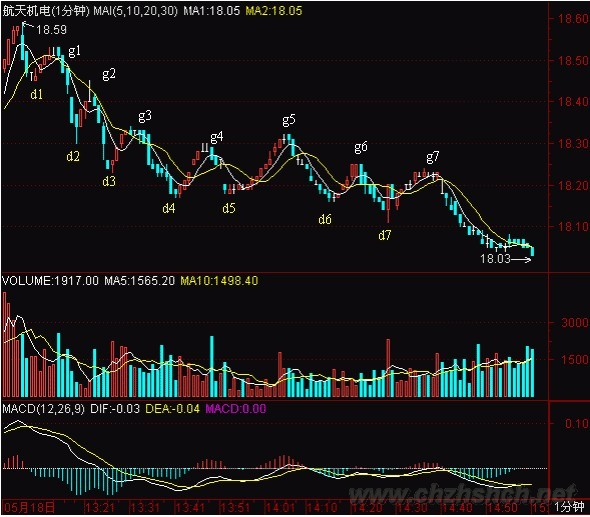
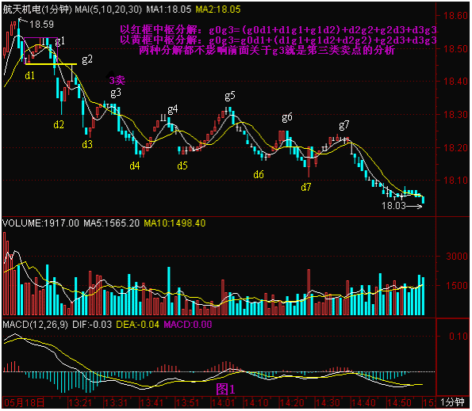
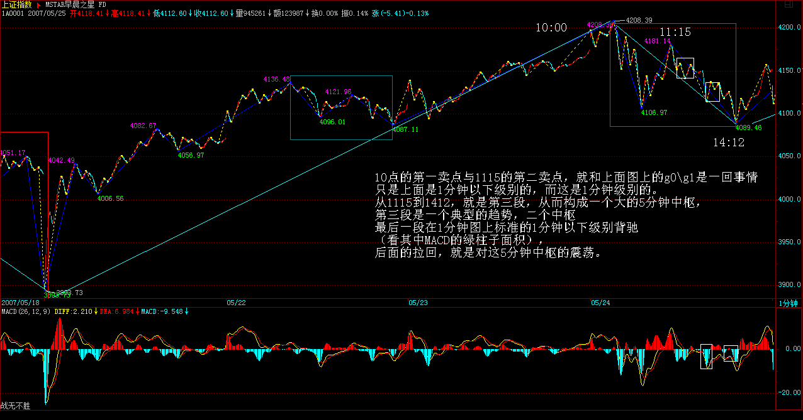
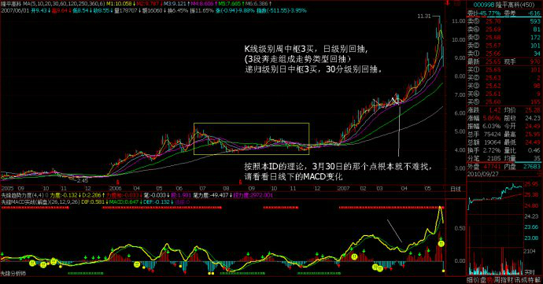
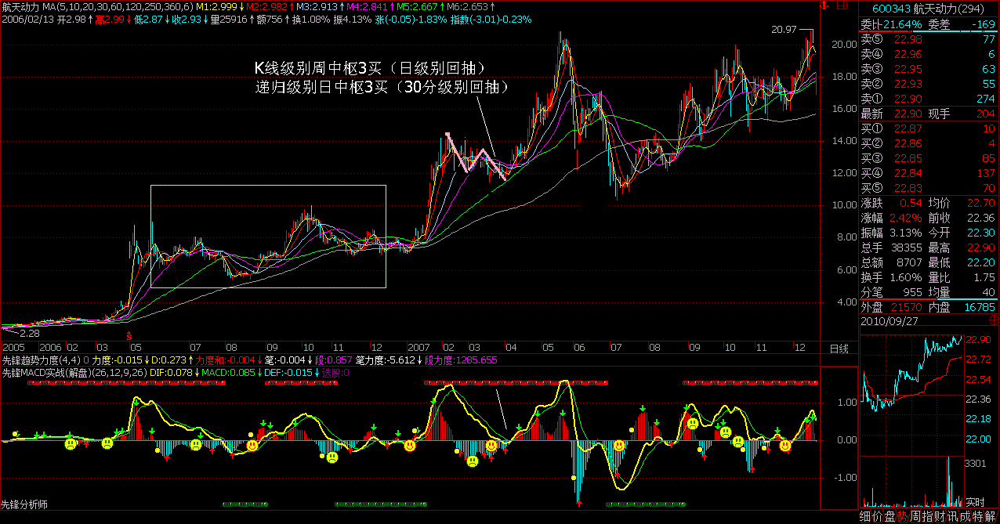
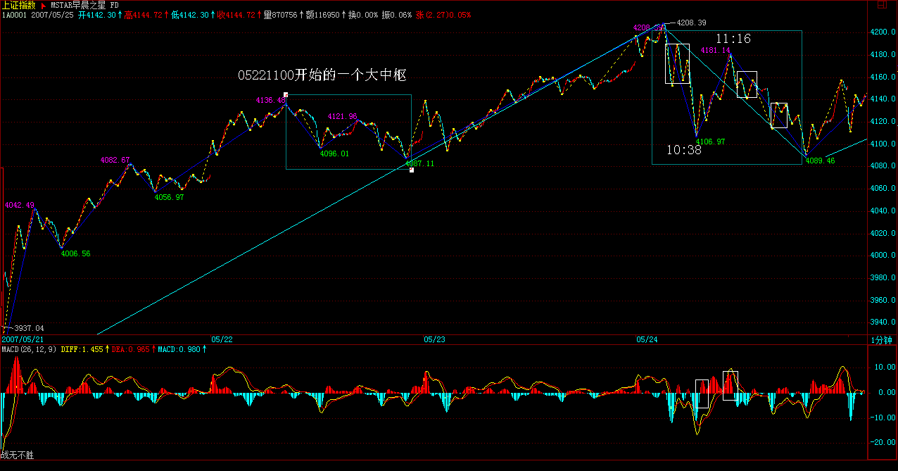

|
 |
教你炒股票54：一个具体走势的分析
(2007-05-24 01:37:31)
（注：这课级别AO为笔，甚至连笔都不是，与分段后AO为段不同。主要学习走势分析的思路。）
注意，看下面分析之前，不能太饿也不能太饱，不能太兴奋不能太不兴奋，否则一定晕。由于一般的图都没有这么复杂，所以看完之后千万别信心受到打击，而是应该信心百倍，知道只要精通本ID的理论，这么细微、古怪的图，都可以当下精确分析并指导操作，从而对本ID理论关于走势的绝对把握性有一个更清楚的认识。后面就是要多看图，多磨练的问题了。
如果概念不清，看到这样的图，基本都要晕头转向。好了，大家开始深呼吸，放松脑筋，别抽筋了。
这图有个条件，就是d1=g2，d2=g4。其实这条件有还是没有，并不影响分析，但有这些条件，就会增加分析的难度。这里，就从18.5元（设为g0）开始分析。
昨天刚好谈到，当你以某级别分析图形时，就先假设了次级别是线段。这图里，除了最后一个，其余每一个dngn、gndn+1都是1分钟以下级别的，所以都可以看成没有内部结构的线段。
我们就从g0开始，当下地进入图形中。显然，当下走到g1时，由于只有两段，所以不形成任何中枢，当然，如果你是一个分笔操作者，那么g1就构成一个第二类卖点了。当走势发展到d2时，一个1分钟级别的中枢就形成，区间是[d1,g1]。后面出现的线段，就要以该区间来决定是中枢震荡还是第三类买卖点。由于d1=g2，那么d2g2这段就属于[d1,g1]中枢的震荡。而到d3g3这段，显然已经不能触及[d1,g1]，所以g3就是第三类卖点。当然，如果前面d1>g2，那g2就是第三类卖点了。
  其实，由于d1=g2，所以当行情发展到d3，就可以当下地用结合律对走势进行多样性分析。这时候，有如下等式：
g0d3=(g0d1+d1g1+g1d2)+d2g2+g2d3=g0d1+(d1g1+g1d2+d2g2)+g2d3
括弧里的是中枢。在后一式子看来，该中枢就是[d1，g2]，也就是一个价位，这时候，也并不影响前面关于g3就是第三类卖点的分析。而这种分解，比较符合一般的习惯，所以是可以采取的。
显然，以MACD辅助判断，力度上，g1d2>g2d3>g3d4,相对来说，后者都是前者的盘整背驰。当然，在1分钟图上，这种背驰都没有什么操作意义，但如果是日线、甚至年线图上，就有了。
分解图形，有一个原则是必须知道的：两个同级别中枢之间必须有次级别的走势连接；例如，g0d4= g0d1+(d1g1+g1d2+d2g2)+（g2d3,+d3g3+g3d4）这样的分解是不被允许的，因为括弧中的两个同级别中枢之间没有次级别的连接。（注意，这与下面三次级别构成中枢的情况不同，那种情况下，是允许三个括弧相加而之间没有次级别，因为那是扩展成高一级别中枢的情况，和这里两个同级别的情况不同。）
当行情当下走到d4点时，根据上面的原则，无非有下面两种可能的分解：（注：回升形成）
g0d4= g0d1+（d1g1+g1d2+d2g2）+g2d3+d3g3+g3d4
= g0d1+d1g1+g1d2+（d2g2+g2d3+d3g3）+g3d4
d4g4是盘整背驰后的正常反弹，针对上面第一种分解，这只是第三类卖点后向一个新的同级中枢移动或形成更高级别中枢的一个中间状态，g4d5这段也是；针对第二种分解，由于g4=d2，所以d4g4是（d2g2+g2d3+d3g3）的中枢震荡，d5g5这段也是。
有人可能要问，在这种情况下，采取哪种分解？其实，哪一种都可以，但第一种，由于在中间状态中，没有一个确定的标准，所以对短线操作指导不足，而第二种，由于是中枢震荡，操作起来就指导明确了，所以从方便操作的角度，就可以用第二种。这就是反复强调的分解多样性的好处，一般来说，对于具体操作，一定要选择当下有明确意义的分解，例如是中枢震荡的，或有第三类买卖点的，但一定要注意，所有的分解必须符合分解的原则，否则就乱套了。
对于第二种分解，d5g5这段属于中枢震荡，但对于第一种分解，d5g5这段就有了一个重大的意义。因为那种第三类卖点出现后的中间状态，在d5g5这段出现后就彻底消除了，一个更大级别的中枢就给确定了。
1、（按照第一种分解）具体如下：
g0g5=
g0d1+{（d1g1+g1d2+d2g2）+（g2d3+d3g3+g3d4）+（d4g4+g4d5+d5g5）}
三个小括弧里的1分钟中枢重叠构成了大括弧里的5分钟高一级别中枢。中枢的区间是[d2，g5]，注意，这时候，就要把1分钟的走势当成线段，小括弧里的都是线段，高低点就是这线段的端点。这样一来，后面的走势就十分简单了，例如，g7就是一个第三类卖点（d7g7，其中2、3根K线有一个较大的回试，然后有5、6两个小十字星停在该区域，由此就知道这肯定构成1分钟中枢了，也就是内部可以画出一个1分钟以下级别的三段来，当然，具体的如果有1分钟以下图看就可以把握，特别对于级别大的图，这些时候都可以看小级别的图去确认，如果经验多的，一般看到这种情况，不用看小级别的都知道这么回事情。）
2、按照第二种分解，相应的5分钟中枢要到g6点才完成，这样g0g6=
g0d1+d1g1+g1d2+{（d2g2+g2d3+d3g3）+（g3d4+d4g4+g4d5）+（d5g5+g5d6+d6g6）}
相应的5分钟中枢区间就是[d3，g5]，在这种情况下，d7g7也是一个中枢震荡，但不构成第三类卖点，因为不符合条件。（为什么？本ID写了这么多，这么简单的问题，就当成作业请各位回答。）
注意，*并不是说一定要形成该级别第三类卖点后才能大幅度下跌，完全可以用该级别以下小级别的第三类卖点就突破中枢，但有一点是肯定的，就是只要足够长时间，该级别的这第三类卖点一定会出现的，当然，在最极端的情况下，这个卖点离中枢很远的位置了，但有一点是肯定的，就是该卖点后一定继续向下。而上涨的情况相反，第三买点后一定继续向上，一个最好的例子就是600477在20070409日这个小级别的第三类买点，这买点离2月分的中枢很远了，但依然有效，而且还是在这么大监管的条件下，本ID的理论继续发挥作用，为什么？因为那些监管并没有破坏本ID理论成立的两个最基本的前提。还有的可以看600837在20070206的例子。至于暴跌的例子，现在很难找到，老一点的投资者应该都记得庄股跳水后，第一次反抽后再继续更大幅度下跌的例子，那就是第三类卖点。
*必须注意，在这种大幅快速波动的情况下，一个小级别的第三类买卖点就足以值得介入。
例如对一个周线中枢的突破，如果真要等周线级别的第三类买卖点，那就要一个日线级别的离开以及一个日线级别的反抽，这样要等到何年何月？因此，一个30分钟甚至5分钟的第三类买卖点都足以介入了。但这里有一个基本的前提，这种小级别的大幅突破必须和一般的中枢波动分开，这种情况一般伴随最猛烈快速的走势，成交量以及力度等都要相应配合。这种操作，如果理论把握不好，有一定风险，就是和一般的中枢震荡搞混了，因此理论不熟练的，还是先按最简单的来，例如对周线中枢的突破，就老老实实等周线的第三类买点。
*注意，卖点的情况，即使理论不熟练的，宁愿按小的来，因为宁愿卖早，决不卖晚。不过，对于大级别中枢来说，如果还要等到第三类卖点才卖，那反应已经极端迟钝了，那第一、二卖点去哪了？市场里可不能随地睡觉。
还有一种极端的例子，就是大幅度的中枢震荡，例如5分钟的中枢在10000元，最极端的，甚至可以次级别以下震荡到0.01元，又拉回来，即使连续跌停到0.01元，然后连续涨停到100000000元，再跌回来10000元，这也是5分钟的中枢震荡。当然，这么有病的例子也只能是理论中的，但由此可见本ID理论的涵盖面之广。所以中枢震荡的操作，一定是向上时力度盘整背驰抛，向下力度盘整背驰回补，而不是杀跌追涨，否则真出现这么有病的情况，那就真有病了。
关于追涨杀跌，如果在中枢震荡中，一定死定。但如果是在第三类买卖点后，却不一定，因为中枢的移动，并不一定恰好就是你买卖的位置就结束了，就算是，后面也还有中枢震荡出现，因此，在这种情况下追涨杀跌，也有活的机会，但这都不是长远之计，为什么有好好的第三类买卖点不用，一定要追涨杀跌？就算是追涨杀跌，也可以利用小级别的买卖点进去，为什么一定要瞎蒙？
回到上面的两种分解，其实这两种分解对于g7点来说，结论是一样的，而从MACD辅助看，这种两次拉回0轴都冲不上去的走势，而且第二次红柱子还面积小了，这种情况也预示者后面有麻烦。但多种分解，其实并不是什么麻烦事，反而是相互印证的好办法。不过一定要再次强调，分解必须符合规范，不能胡乱分解。
按严格标准说，如果你能熟练地，无论任何图形，都能当下快速地按以上标准来分解并指导操作，那么对于本ID理论的学习，就大致可以小学毕业了。不过这样可能对信心不足或学习时分析能力比较一般的人打击过大，所以为了鼓励大家，本ID决定向教育部门学习学习，也来一个扩招，达到这种水平的，都统一发本科毕业证书，又鉴于最近北大已经堕落到连孔男人、李男人之流都可以教授教授了，所以决定毕业证书都统一成北大牌的，一律免费，这样大家应该可以放心学习了。
石猴：
2008-01-05
16:11:32
另： 每日解盘（2007-05-24 15:34:20 ） 2007-05-24
15:34:20
虽然今天本ID见到什么股票都想当AC给揍扁，但如果你学了上面的课程连今天的图都看不明白，那自己也要揍扁自己了。10点的第一卖点与1115的第二卖点，就和上面图上的g0\g1是一回事情，只是上面是1分钟以下级别的，而这是1分钟级别的。从1115到1412，就是第三段，从而构成一个大的5分钟中枢，第三段是一个典型的趋势，二个中枢，最后一段在1分钟图上标准的1分钟以下级别背驰（看其中MACD的绿柱子面积），后面的拉回，就是对这5分钟中枢的震荡。就这么简单，看不明白的，对着今天的分时图，和上面的图，请好好研究。
 明白了上面，明天的走势就太简单了，就是关于这中枢的震荡直到出现第三类买卖点，就这么简单，简单得像昨天首发就应该是克劳奇，但竟然没有，你说是不是某些人脑子进水了。
至于大的走势，就还是4129点的1/2线问题，一定要震荡给站住才谈论向上发展，这是一个大前提。
个股不想说什么了，千万别问本ID，今天635涨停究竟买不买。一定要在买点买，短线也是一样的。就像本ID那16只里前期最弱的998和343，998在3、4月分盘整的时候，无数人在叨唠，有那时间叨唠，还不如问自己，那盘整究竟是什么级别的第三类买点，然后去分析细部，找出启动的点。按照本ID的理论，3月30日的那个点根本就不难找，请看看日线下的MACD变化。其他个股也是一样的。343，3月份的盘整是什么？MACD刚回拉0轴就起来，这够标准没有？为什么有时间埋怨没时间研究？

 每日解盘（2007-05-25 15:41:14 ）
附录：
今天大盘没什么可说的，就是在昨天那5分钟中枢上晃荡，周五，由于对周末消息面的犹疑，尾盘只能横着。下周依然只要看这中枢震荡直到第三类买卖点出现。大的方面，还是突破4129的1/2线后的反抽确认活动，没什么特别的。下周很关键，因为涉及月线收盘，月线如果留下长上影，那下月一个弱走势盘整走势就很难避免。如果收光头阳线，那么后面继续强势的可能就很大了。
前面突破3000点时，有人问5浪如何如何，本ID回帖反问，为什么不能是3浪3？当然，本ID的剧本是这样设计的，能否最终完成，这要看很多方面的配合，不是本ID一个人能完全决定的，但从春节前直播上3000点，到319一大早用神州自有中天日，万国衣冠舞九韶发总攻号令，这3之3的游戏，也算有点意思了。不是汉奸说3个月之内回3000之下吗？那就让他在3000下等着吧。
回想319在3000点之下的情况，后面大盘走成怎样，怎么都比那时候要上了一个大台阶了，这个局面来之不易，大家是珍惜的，也希望管理层珍惜，脑子尽量干燥点。当然，管理层也不是一言堂的，所以，一切都是合力的结果，多一个人出力，才可能走出剧本所描画的蓝图。
周末，腐败去吧！
54课缠师的回帖整理
缠中说禅：
2007-05-24
15:43:17
缠中说禅：
2007-05-24
15:50:05
雪狼 
缠中说禅：
2007-05-24
15:52:02
[匿名] 袖手旁观
缠中说禅：
2007-05-24
15:54:48
缠中说禅 缠中说禅：
2007-05-24
15:58:51
雪狼
缠中说禅：
2007-05-24
16:00:15
[匿名] 你的样子
缠中说禅：
2007-05-24
16:04:41
[匿名] 袖手旁观
缠中说禅：
2007-05-24
16:11:18
对不起，本ID有事要马上外出，晚上有应酬，各位如果真想自由于走势中的，就要多花点工夫，多看点图，首先把今天的分时图留下来，这个图太典型了，把1分钟怎么演化成5分钟都表示出来了。
缠中说禅2007-05-28 16:04:26 [举报]
石猴：
2008-01-05
16:09:09
提示一下： |
|
|
|